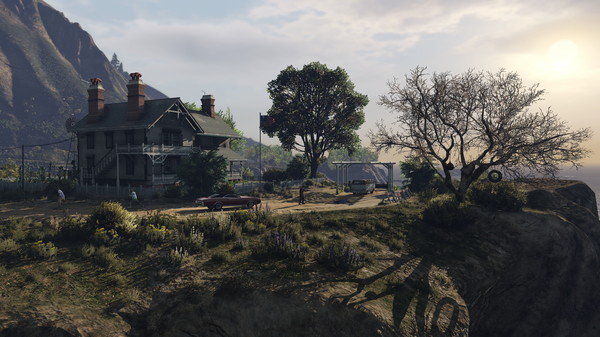
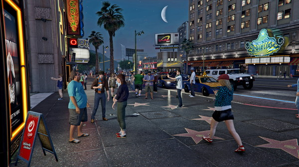
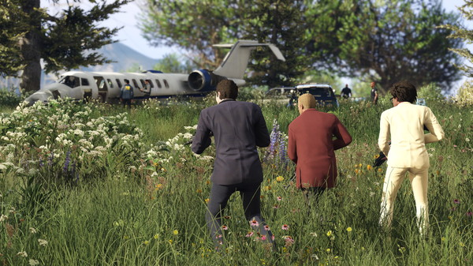
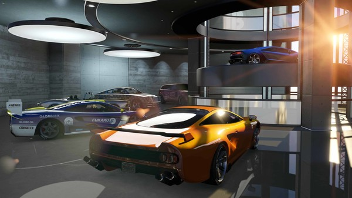
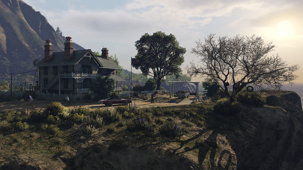
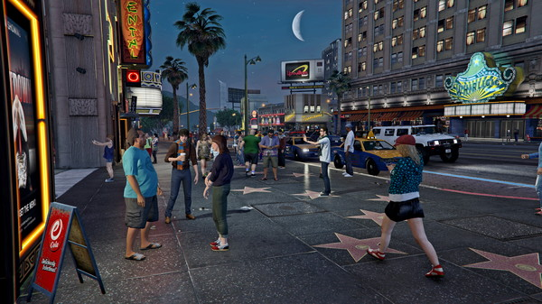
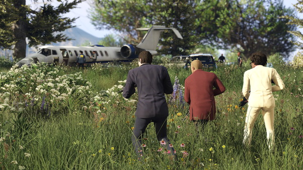
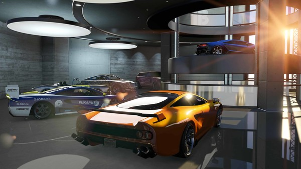

로스 산토스는 찬란한 햇빛을 받으며 거대하게 뻗은 대도시입니다.
이곳에는 감동적인 인간 승리를 이뤄낸 사람들과 수많은 아이돌 스타,
퇴물이 되어가는 유명인사 등, 한때는 서구 세계의 부러움을 한몸에 받았던
사람들이 경제 불황과 싸구려 리얼리티 TV 시대에 살아남으려 발버둥치고 있습니다.
어느 날 문득, 동네 건달과 은퇴한 은행 강도,
미치광이 사이코패스는 자신들이 어두운 범죄 세계와 미국 정부 기관,
엔터테인먼트 회사의 가장 끔찍하고 무시무시한 현실과 복잡하게 얽혀 있다는 걸 깨닫습니다.
아무도 믿을 수 없는, 서로조차 믿을 수 없는 이 무자비한 도시에서 살아남기 위해
그들은 여러 번의 위험한 습격에 몸을 던져야 합니다.
역대 최고로 거대하고 역동적이며 다양한 오픈 월드 안에서 Grand Theft Auto V는
새로운 방식으로 이야기 전개와 게임 플레이를 혼합했습니다.
플레이어는 게임의 세 주인공의 인생에 들락날락하면서
서로 교차하는 이야기를 모두 플레이하게 됩니다.
세상을 놀라게 한 Grand Theft Auto 고유의 매력적인 요소는 물론,
놀랍도록 정밀한 표현과 현대 문화에 대한 블랙 유머가 더해져 돌아옵니다.
또한, 오픈 월드 멀티 플레이 게임에 대한 완전히 새롭고 야심 찬 접근도 주목하십시오.



